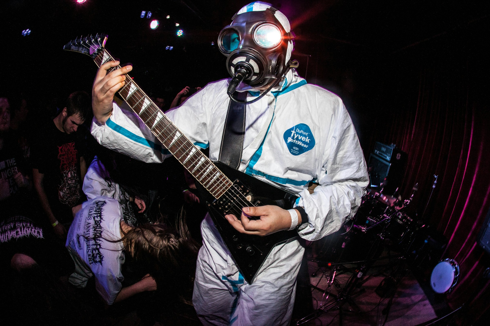
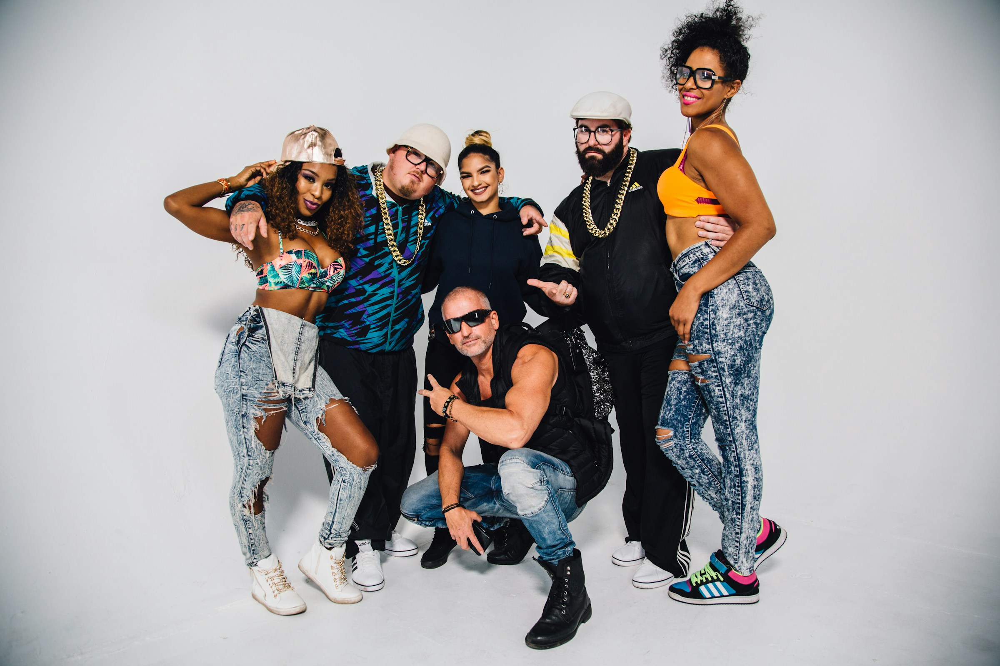
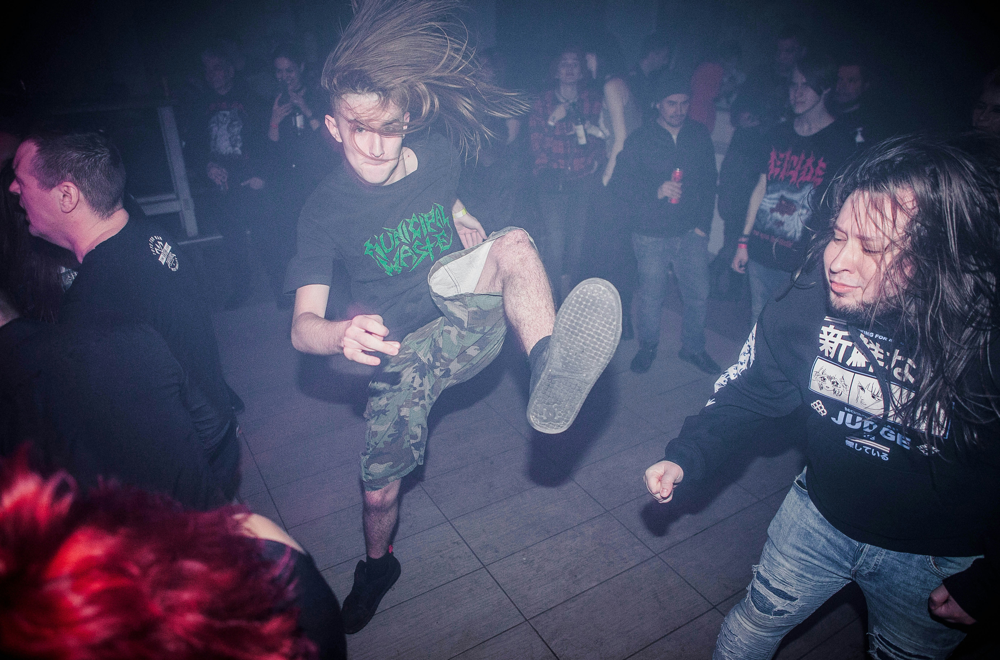
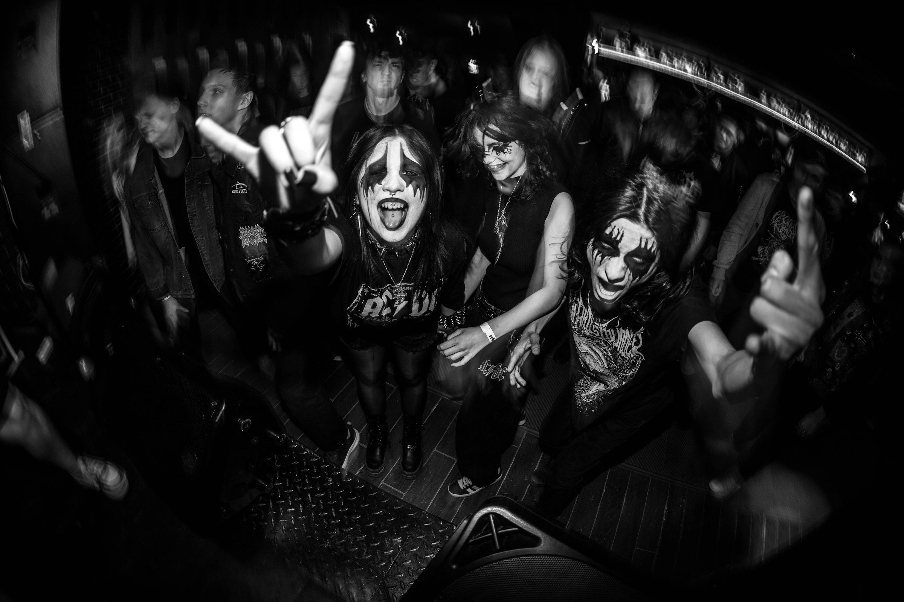

Faites le plein de décibels
Le Sans Plomb est une salle de concert unique, ancienne station-service transformée en lieu de musique et d'énergie pure. Chaque semaine, nous accueillons des événements énergiques, des concerts de groupes locaux et internationaux, et des soirées à thème. Venez vivre des expériences sonores inoubliables dans un environnement décalé et dynamique.
🚗 Prochain arrêt : Nos événements à venir
Voici la programmation des événements à venir au Sans Plomb. Ne manquez pas les concerts et soirées exceptionnelles de cette saison !
-

Samedi 10 mai – Turbo Diesel Tour – CHF 25.–
Un concert explosif avec Turbo Diesel, le groupe le plus énergique de la scène métal actuelle. Préparez-vous à un tourbillon de décibels et de riffs puissants !
-

Vendredi 16 mai – DJ Super 98' (Soirée rétro) – CHF 20.–
Retour dans les années 90 avec DJ Super 98' ! Profitez d’une soirée rétro avec les plus grands hits des années 90, tout en dansant sur une piste de danse animée.
-

Samedi 24 mai – Punk & Pétrole Festival – CHF 30.–
Le festival qui déchaîne les foules ! Une journée pleine d'énergie avec les meilleurs groupes de punk et de rock’n'roll. Si vous aimez les guitares hurlantes et les rythmes endiablés, ce festival est fait pour vous !
-
Jeudi 6 juin – Trip-Hop & Footwork Night – CHF 35.–
Une soirée envoûtante avec une musicienne de Chicago, pionnière du mélange entre trip-hop atmosphérique et footwork percutant. Laissez-vous transporter par des rythmes hypnotiques et des mélodies captivantes dans une ambiance unique et immersive.
-

Vendredi 30 mai – Blizzard Obscur : Soirée Black Metal – CHF 25.–
Plongez dans les ténèbres glaciales avec cette soirée dédié au black metal le plus underground et authentique. Une soirée intense avec des groupes qui repoussent les limites du genre. Préparez-vous à une expérience sonore et visuelle blasphématoire.
📷 L’ambiance du Sans Plomb
Découvrez l'ambiance unique de notre salle à travers quelques photos. Chaque événement est une véritable explosion de musique, de lumière et de bonne humeur.